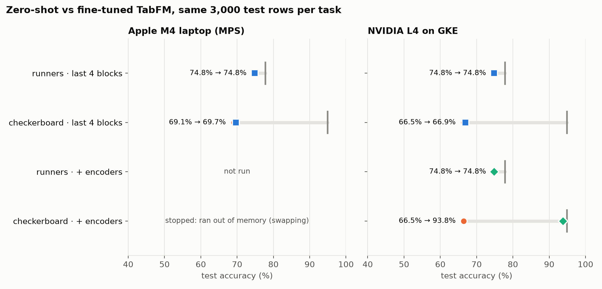
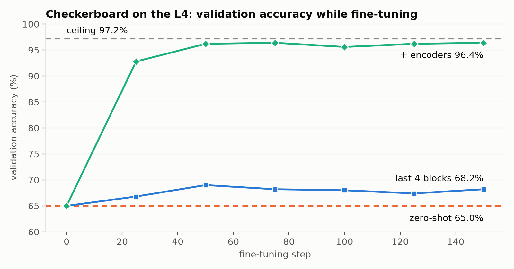

Reading not your game? Slides instead. Zero-shot vs fine-tuned TabFM on synthetic tables where the best achievable score is known.
Gleb Lukicov · github.com/glukicov/ltm_ft

Same 3,000 test rows per task. Checkerboard log loss 0.614 → 0.593 (ceiling 0.202); runners unchanged at 0.527 (ceiling 0.473).
TabFM predicts a row from labelled context rows in one forward pass, with no training step. Fine-tuning keeps that interface and trains it on your table.
Zero-shot TabFM matched a trained CatBoost model on penguins and on synthetic runners, without training, tuning or a model file.
Full fine-tuning makes TabPFNv2 state of the art on academic benchmarks; on small datasets the gains are often statistically insignificant.
src/ltm_ft/finetune.py · a test asserts episode logits equal the stock classifier's
loss = episode_loss(model, episode) loss.backward() # type: ignore[no-untyped-call] master.gradients_to_masters() torch.nn.utils.clip_grad_norm_(master.masters, config.grad_clip) optimizer.step() scheduler.step() optimizer.zero_grad(set_to_none=True) master.masters_to_params()
No custom forward: frozen parameters do not require gradients, so autograd records nothing until the first trainable block.
Master weights: gradients move to float32 copies, AdamW updates those, and the rounded values go back into the bf16 model.
| What is trained | Trainable | Outcome on a 24 GB M4 |
|---|---|---|
| Everything | 1.64B | ~26 GB for weights, gradients and two Adam moments: does not fit |
| Last 4 of 24 ICL blocks + head | 277M | ~10 GB peak, 15–30 s per step used |
| … + row/column encoders | 297M | Backward through all 24 blocks: 249 s per step, swapping |
1.62B of the 1.64B parameters sit in the in-context-learning transformer. The paper found partial fine-tuning close to full fine-tuning.
| 3,000 test rows | Log loss | ROC AUC | Accuracy |
|---|---|---|---|
| TabFM zero-shot | 0.5267 | 0.8240 | 74.8% |
| TabFM fine-tuned (early stopping kept step 0) | 0.5267 | 0.8240 | 74.8% |
| Generator's true probabilities (ceiling) | 0.4732 | 0.8537 | 77.8% |
Validation log loss: 0.4651 at step 0; 0.4712, 0.4684 and 0.4683 at steps 25, 50 and 75. Three evaluations without improvement stopped the run.
Zero-shot, 21 real columns vs the same rows with 100 extra noise columns (--noise-columns 100). Distractors were not a weakness to fine-tune away either.
Ten uniform features. The label depends only on which square of a 6×6 board the first two fall in: P(yes) is sigmoid(+3) on white squares, sigmoid(−3) on black.
Neither feature is informative alone, and a row's nearest neighbours in ten dimensions are mostly on other squares.
Test accuracy: zero-shot 69.1%, ceiling 94.9%. Log loss: 0.614 vs 0.202.

500 validation rows. Log loss 0.6077 at step 0, 0.5837 at step 75 (kept), 0.5866 at step 150.
| 3,000 test rows | Log loss | ROC AUC | Accuracy |
|---|---|---|---|
| TabFM zero-shot | 0.6140 | 0.7642 | 69.1% |
| TabFM fine-tuned (step 75) | 0.5934 | 0.7721 | 69.7% |
| Ceiling | 0.2016 | 0.9490 | 94.9% |
| Fine-tuned minus zero-shot | Δ | 95% paired-bootstrap interval |
|---|---|---|
| Log loss | −0.021 | [−0.024, −0.018] significant |
| ROC AUC | +0.008 | [+0.002, +0.014] significant |
| Accuracy | +0.6 pts | [−0.6, +1.8] within noise |
| Checkerboard, zero-shot, 500 validation rows | Log loss | ROC AUC | Accuracy |
|---|---|---|---|
| bfloat16 (library default) | 0.6077 | 0.7749 | 70.2% |
float32 (dtype=None) | 0.6495 | 0.6658 | 59.8% |
Why it matters: "upcast the weights you train to float32" is the textbook move. Here it changes the model before the first gradient step, and a run could "improve" from 60% back to 70% without learning anything.
def __init__(self, params: list[nn.Parameter]) -> None:
self.params = params
self.masters = [p.detach().float().clone() for p in params]
def gradients_to_masters(self) -> None:
for p, m in zip(self.params, self.masters, strict=True):
m.grad = None if p.grad is None else p.grad.float()
p.grad = None
@torch.no_grad()
def masters_to_params(self) -> None:
for p, m in zip(self.params, self.masters, strict=True):
p.copy_(m)
Step 0 is the stock model: a test asserts the prepared model's predictions equal the untouched checkpoint's.
Nothing to convert: the fine-tuned result is a plain bf16 TabFM the stock TabFMClassifier uses directly.
README.md: results, method and caveatsoutputs/*/results.json: every number on these slidessrc/ltm_ft/finetune.py: the training loopuv run ltm-ft run --task checkerboard --name checkerboard uv run ltm-ft precision --task checkerboard